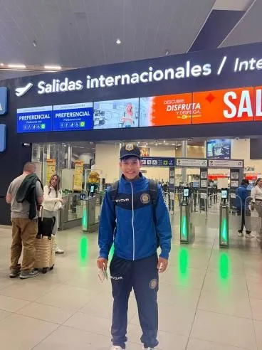
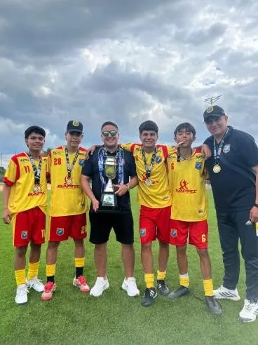
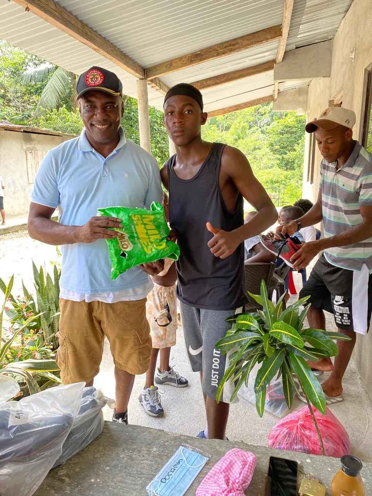

2026 · Mitú y PereiraCalzado para ir a clase
110pares de zapatos
2ciudades
Zapatos nuevos, junto a Nestlé
Gestionamos 110 pares de zapatos en alianza con Nestlé para niños y niñas de Mitú y Pereira.
NestléEducación

Deporte, educación y ambiente: cifras, historias y cada jornada en Bogotá, Huila, Vaupés y Chocó.


Dos jóvenes del club Seven Sporting Vaupés [PENDIENTE: nombres solo con autorización de las familias] crecieron en Mitú, en plena Amazonía colombiana, donde las oportunidades de deporte estructurado, formación y competencia casi no existen.
Ambos hacían parte de los 35 jóvenes del club Seven Sporting Vaupés. Tras los procesos de evaluación, fueron invitados a Bogotá para pruebas de alto rendimiento. Durante su estancia entrenaron con los demás integrantes de la Fundación, compartieron espacios de convivencia y se ganaron un lugar en la delegación.
En noviembre de 2025 tomaron un vuelo internacional por primera vez. En Mérida, Yucatán, fueron parte de una delegación que regresó con tres títulos.
“Esta experiencia representa el verdadero propósito de nuestra labor: usar el fútbol como herramienta de transformación social.”
— Informe de gestión 2025


En Mitú, en plena Amazonía, conseguir útiles escolares puede ser difícil para muchas familias. En febrero de 2026 entregamos más de 150 kits a niños, niñas y adolescentes de distintas comunidades, y en mayo llegaron 20 más.
Luego, en alianza con Nestlé, gestionamos 110 pares de zapatos para niños de Mitú y Pereira: lo básico para llegar al colegio.


El 10 de agosto de 2026 un sismo de magnitud 7,4 golpeó San José del Palmar, en el Chocó, un departamento que ya enfrentaba la pobreza más alta del país. La Fundación habilitó un centro de acopio en Bogotá entre el 17 y el 21 de agosto, y el 23 de agosto abrió un segundo en el Polideportivo del barrio Simón Bolívar, junto a las Escuelas deportivas R8R Rafa Robayo y la Fundación Artistas Fútbol Club.
Más de 30 voluntarios recibieron, clasificaron y empacaron las donaciones. Luego viajaron en camión y lancha hasta comunidades como Río Pepé para entregarlas familia por familia.
Filtra por tipo de actividad y toca las fotos para verlas en grande.
Gestionamos 110 pares de zapatos en alianza con Nestlé para niños y niñas de Mitú y Pereira.
Recolectamos mercados, agua y elementos básicos en Bogotá con la comunidad, aliados y ciudadanos. Luego los llevamos hasta las comunidades afectadas por el sismo, incluido el municipio de Río Pepé.
Participamos en la F7 Intercontinental Cup, el Mundial de fútbol 7 organizado por la FIF7. Una oportunidad de proyección internacional, fortalecimiento deportivo e intercambio con delegaciones de diferentes países.
Entrenamiento técnico, táctico y físico, y aprendizaje de los conceptos del fútbol 7 internacional. También espacios de integración y convivencia basados en la disciplina, el respeto y el trabajo en equipo.
Segunda entrega del año para jóvenes de las comunidades beneficiarias del Vaupés, con herramientas y útiles que apoyan su formación académica.
Patrocinamos un torneo relámpago en el Parque Metrópolis: organización deportiva, alquiler del escenario y transporte del equipo de Garzón, Huila, hasta Bogotá. Hubo premios al mejor equipo y al mejor entrenador.
Entregamos más de 150 kits escolares a niños, niñas y adolescentes de diferentes comunidades de Mitú, para fortalecer sus procesos educativos.
Con la Asociación Colombiana de Fútbol 7 reconocimos a los deportistas más destacados, compartimos con padres y familias, y presentamos los resultados del año y los proyectos para 2026.
Acompañamos a la Selección Colombia de Fútbol 7 y a las categorías Sub-13, Sub-15, Sub-17 y Única. Antes, apoyamos la convocatoria para que jóvenes de distintas regiones pudieran representar al país.
Ver la historia completa25 deportistas de 17 a 23 años, dos entrenadores y un integrante de apoyo. Seven Bogotá llegó a cuartos de final tras competir con equipos de Argentina, Brasil y El Salvador.
Con la Fundación Triunfadores y la visita de Jhon Cárdenas, el exjugador profesional Óscar Castiblanco y Andrés Chacón, sentamos las bases de un proceso permanente en el territorio.
Espacios gratuitos de formación en fútbol 7 para identificar, formar y proyectar talentos del Vaupés hacia procesos de selección y torneos nacionales e internacionales.

Si quieres ser parte de lo que viene, hay un lugar para ti.